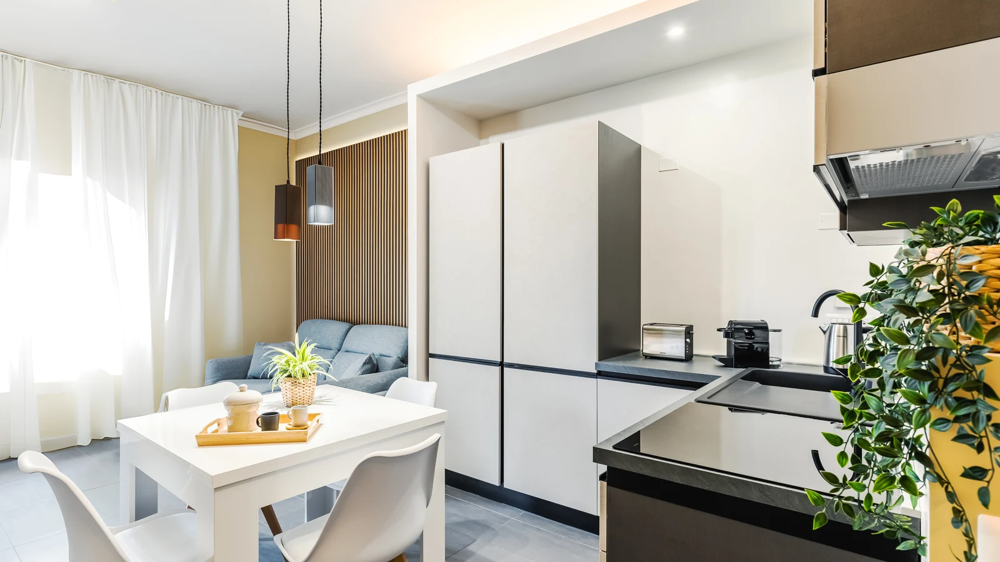

La tabella di marcia
È la vita della casa: da quando arriva la richiesta a quando arriva il bonifico.
Calendario unico su tutti i portali. Non esiste il doppio sovrapposto, perché non esistono due calendari.
Tariffa aggiornata sulla domanda vera, giorno per giorno, non sul prezzo dell’anno scorso.
Check-in senza appuntamenti a mezzanotte e senza chiavi passate di mano in un bar.
Assistenza continua, H24, per tutto il soggiorno. Il telefono che squilla alle due di notte è il nostro.
Protocollo scritto a ogni cambio, biancheria da lavanderia industriale. Com’è fatta.
A ogni check-out: elettrodomestici, rubinetteria, velocità del wi-fi, serrature e accessi. Prevenzione, non emergenza.
CIN, Alloggiati Web, tassa di soggiorno dichiarata e versata, ROSS1000. Su mandato, per conto tuo.
Report mensile e certificazione. La tua posizione fiscale resta del tuo commercialista: noi gli diamo i numeri giusti, in tempo.
Il compenso
Se la casa non lavora, non ci paghi. Guadagniamo quando guadagni tu, ed è l’unico modo onesto di far combaciare i due interessi. Cosa c’è dentro quel 15%.
Un ordine di grandezza: su Rome Smart Sea a Ostia, nei mesi di picco del 2026, il prezzo medio a notte è passato da 120 a 186 € e lo status Superhost è arrivato in due mesi. È un appartamento solo, e un appartamento solo non è una promessa: è un esempio di cosa cambia quando qualcuno guarda i numeri ogni giorno.
Sopralluogo e stima di quanto può rendere. Senza impegno e senza costo. Se non ha senso, te lo diciamo.
Scrivici ora